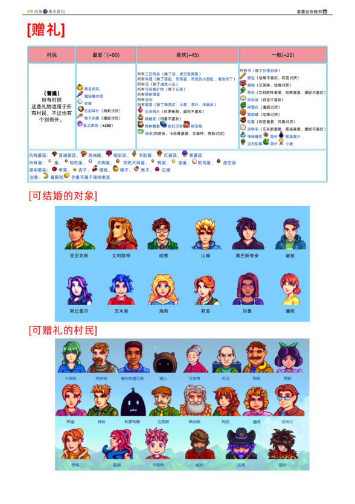

百科/村民与好感
CHAPTER 06
村民与好感
好感度怎么算、生日表、送礼规则、结婚条件与婚后收益。
村民 33 位
1 心 250 点
每周 2 份礼物
生日 ×8

好感度规则
| 行为 | 好感变化 | 说明 |
|---|---|---|
| 每天对话 | +20 | 一天一次，漏掉会开始衰减 |
| 送出「最爱」 | +80 | 品质越高额外加成 |
| 送出「喜欢」 | +45 | — |
| 送出「一般」 | +20 | — |
| 送出「不喜欢」 | −20 | — |
| 送出「讨厌」 | −40 | 垃圾、鱼饵等 |
| 生日礼物 | ×8 | 不占用每周 2 次限额 |
| 长期不对话 | 递减 | 已认识但当天没说话会缓慢掉好感 |
1 心 = 250 点，普通村民上限 10 心（2500 点）；可恋爱对象在送花束后上限提升到 14 心（3500 点）。每周最多送 2 份礼物（周日重置），生日那份不计入。
送礼怎么最快
- 先认识所有人春季前两周把镇上跑一遍，认识 28 人可完成任务并拿好感。
- 每人每周 2 份「最爱」攒一批通用最爱（见下），优先给想攻略的对象。
- 生日必送生日礼物 ×8，一份最爱等于平时 8 份，是全游戏最高效的好感来源。
- 每天对话路过就聊一句，+20 且防止衰减，成本为零。
- 节日互动花舞节跳舞、冬星宴互赠礼物都会额外加好感。
通用最爱
五彩碎片、珍珠、黄金南瓜、魔法糖冰棍、兔脚——这五样几乎人人都爱，留几份专门应付生日和任务。部分村民有例外，送之前不确定就存档。
生日表
生日当天送「最爱」是冲好感的核心手段。下表按季节排列，方便每月初做计划。
| 春 | 村民 | 夏 | 村民 | 秋 | 村民 | 冬 | 村民 |
|---|---|---|---|---|---|---|---|
| 04 | 肯特 | 04 | 贾斯 | 02 | 潘妮 | 03 | 莱纳斯 |
| 07 | 刘易斯 | 08 | 格斯 | 05 | 艾利欧特 | 07 | 卡洛琳 |
| 10 | 文森特 | 10 | 玛鲁 | 11 | 乔迪 | 10 | 塞巴斯蒂安 |
| 14 | 海莉 | 13 | 亚历克斯 | 13 | 阿比盖尔 | 14 | 哈维 |
| 18 | 帕姆 | 17 | 山姆 | 15 | 桑迪 | 17 | 法师 |
| 20 | 谢恩 | 19 | 德米特里厄斯 | 18 | 玛妮 | 20 | 艾芙琳 |
| 26 | 皮埃尔 | 22 | 矮人 | 21 | 罗宾 | 23 | 莉亚 |
| 27 | 艾米丽 | 24 | 威利 | 24 | 乔治 | 26 | 克林特 |
| — | — | 28 | 雷欧 | — | — | — | — |
科罗布斯、冈瑟、马龙、齐先生等特殊 NPC 不在常规生日表内；具体以游戏内社交菜单为准。
12 位可攻略对象的代表喜好
只列每人的标志性最爱，方便应急送礼；完整列表在游戏内社交菜单的「礼物」页可以逐人查看。
| 村民 | 生日 | 代表性最爱 |
|---|---|---|
| 阿比盖尔 | 秋 13 | 紫水晶、南瓜、巧克力蛋糕、河豚 |
| 亚历克斯 | 夏 13 | 完整早餐、鲑鱼晚餐、烤宽面条 |
| 艾利欧特 | 秋 05 | 龙虾、石榴、蟹黄糕、鱿鱼墨 |
| 艾米丽 | 春 27 | 布料、海蓝宝石、红宝石、羊毛 |
| 海莉 | 春 14 | 粉红蛋糕、水果沙拉、向日葵、椰子 |
| 哈维 | 冬 14 | 咖啡、泡菜、松露、葡萄酒 |
| 莉亚 | 冬 23 | 沙拉、山羊奶酪、松露、葡萄酒 |
| 玛鲁 | 夏 10 | 钻石、金锭、铱锭、电池组 |
| 潘妮 | 秋 02 | 钻石、绿宝石、甜瓜、罂粟 |
| 山姆 | 夏 17 | 仙人掌果、枫糖浆、披萨、虎眼石 |
| 塞巴斯蒂安 | 冬 10 | 冻泪、黑曜石、南瓜汤、虚空蛋 |
| 谢恩 | 春 20 | 啤酒、辣椒、披萨、爆米花 |
礼物品质有加成
银星、金星、铱星的礼物会额外加好感，所以「高品质的喜欢」有时比「普通品质的最爱」差不了太多。铱星最爱是最优解。
结婚流程与婚后
- 刷到 8 心与心仪对象好感达到 8 心。
- 买花束皮埃尔处购买花束（200g），送给对方开始交往，好感上限提升到 14 心。
- 刷到 10 心继续送礼与对话，达到 10 心。
- 买美人鱼吊坠雨天的海滩找老水手，花 5000g 购买。
- 求婚把吊坠送给对象，三天后举行婚礼。
婚后配偶会：偶尔浇水、喂动物、修围栏、做早餐、送你礼物；好感达到 14 心后可购买配偶肖像。结婚还会获得一个星之果实（体力上限 +34）。
- 离婚：刘易斯家（市长庄园）花 50000g 办理，离婚后对方好感清零。
- 室友：不结婚也可以邀请科罗布斯同住，条件是好感 10 心并完成相关任务。
- 多配偶：原版不支持，需要模组。
其他重要 NPC
| NPC | 位置 | 作用 |
|---|---|---|
| 皮埃尔 | 镇上杂货店 | 买种子、肥料、背包升级 |
| 罗宾 | 山上木匠店 | 建造建筑、房屋升级、家具 |
| 克林特 | 镇上铁匠铺 | 升级工具、打开晶洞 |
| 威利 | 海滩鱼店 | 鱼竿、鱼饵、鱼塘相关 |
| 玛妮 | 农场南边牧场 | 购买动物、干草 |
| 冈瑟 | 镇博物馆 | 捐献古物与矿石 |
| 法师 | 镇西法师塔 | 祝尼魔文字、祝尼魔小屋 |
| 科罗布斯 | 下水道 | 商店、室友、星之果实 |
容易漏掉的送礼规则
- 每周 2 次（每天最多 1 次）；如果本周已经送满 2 次，生日当天仍可再送一次。
- 生日送礼效果 ×8；冬 25 冬日星盛宴当天送礼效果 ×5——同一天既生日又过节，只按更高倍率算。
- 礼物品质越高，加的好感越多；送对方最爱的铱星物品收益最大。
- 普通村民好感上限 10 心；配偶或室友上限提升到 14 心。
- 节日现场与村民交谈同样加好感；节日当天的动物会被自动喂食，不用赶回去。
- 送垃圾、送对方讨厌的东西会倒扣，宁可当天不送也别乱送。
喜好与生日以 1.6 版为准；个别 NPC 的礼物反应在不同版本可能有微调。